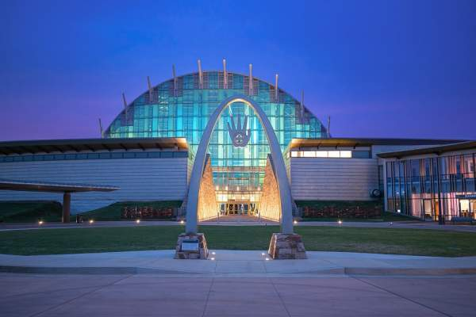
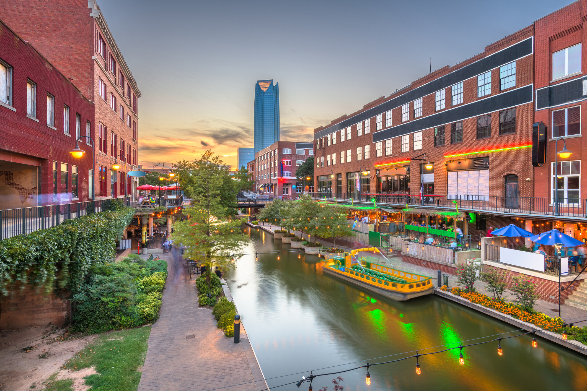
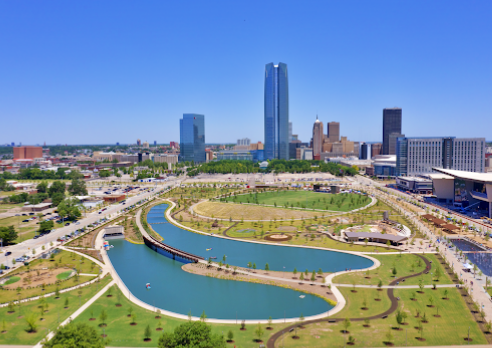
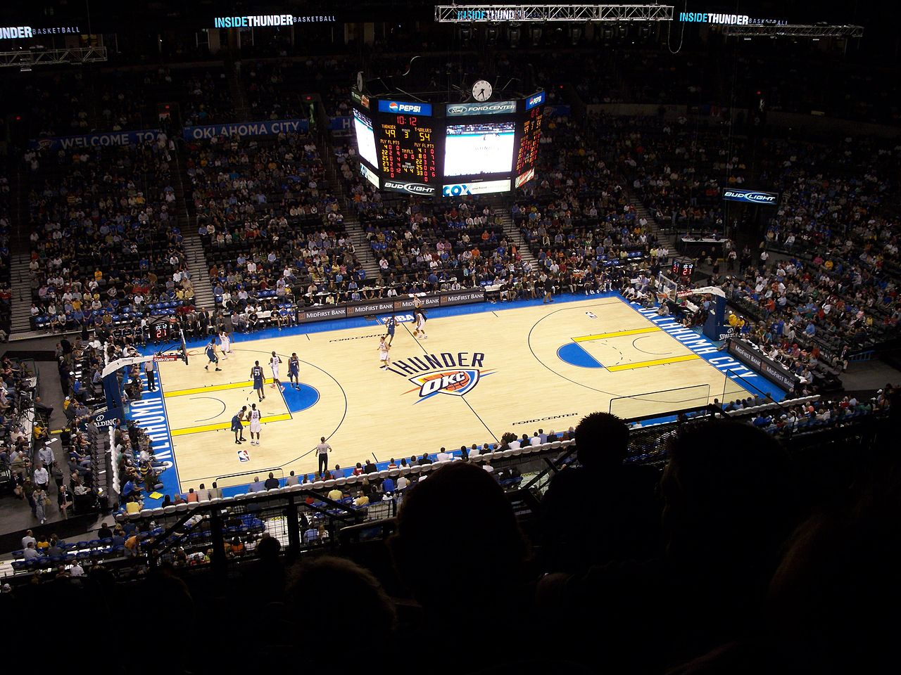
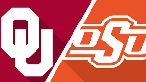

Oklahoma boasts around 235 days of sunshine throughout the year so there is plenty of nice weather to enjoy many activities all year-round. Whether you enjoy shopping, eating at new restaurants, hiking, or enjoying sporting events, OKC has the attraction for you! Here is a list of a few popular activities around the state:

FIRST AMERICANS MUSEUM
This is a museum for visitors to learn about the
histories of 39 First American Nations. The history of
Native Americans is an important legacy for the state of
Oklahoma and this is a can't miss stop.

BRICKTOWN - DOWNTOWN OKC
Bricktown is located in downtown Oklahoma City. There
dozens of unique restaurants, shopping boutiques, a movie
theater, water taxi rides, riverwalk trails, and much more.

SCISSORTAIL PARK
This is a wonderful park built with walking trails, a
childrens playground, sports pavilion, space for festivals,
and much more. There are activities for all seasons so there
is never a bad time to visit.

NBA - OKC Thunder
OKC is the home to the popular NBA team - Oklahoma
City Thunder. If you enjoy basketball, you won't regret
making a trip to see a game where there is plenty of fun,
food, and excitement to go around.

Football
Oklahoma is nothing without its college football. Home
to the University of Oklahoma (OU) and Oklahoma State
University (OSU), where support runs high and rivalries run
deep.